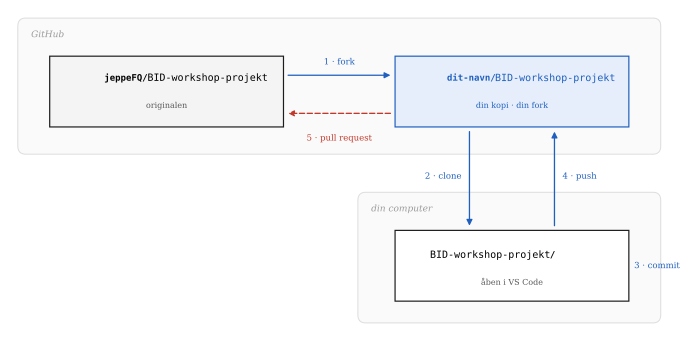

Lektion 3
Git og versionskontrol
Jeppe Fjeldgaard Qvist
2026-09-21
Dagens program
Filsystemet: kort genopfriskning fra lektion 1/2. Det er dét, Git holder øje med
Versionskontrol: hvad er det, og hvorfor
Git i praksis: de fem kommandoer, I skal bruge, og det samme i VS Code
Fork og pull request: at arbejde i andres kode
Workshop: I henter og tilføjer jer til vores mini-projekt, laver jeres eget repository og fortsætter med Python-øvelserne dér
Filsystemet
Hvad er en fil?
En sekvens af data, gemt som en samlet enhed: tekst, billeder, programmer, notebooks. Og som vi så i lektion 1, under overfladen er det hele bytes.
- Filnavn og filendelse, fx
projekt.docx- basenavn:
projekt - endelse:
.docx, fortæller hvilken slags data filen indeholder, og hvilket program der skal læse den
- basenavn:
- Metadata: størrelse i bytes, oprettelses- og ændringsdato, ejer og adgangsrettigheder, osv.
Mapper er et træ
En mappe er en container til filer og andre mapper. Øverst står roden: / på macOS og Linux, et drevbogstav som C:\ på Windows.
macOS
/
└── Users
└── jeppe
├── Desktop
├── Documents
│ └── 1-bid
│ ├── 01-variable.ipynb
│ └── data
│ └── salg.csv
└── DownloadsWindows
C:\
└── Users
└── jeppe
├── Desktop
├── Documents
│ └── 1-bid
│ ├── 01-variable.ipynb
│ └── data
│ └── salg.csv
└── DownloadsAbsolutte og relative stier
Absolut sti: fra root-mappen og hele vejen ned:
/Users/jeppe/Documents/1-bid/data/salg.csv
C:\Users\jeppe\Documents\1-bid\data\salg.csvRelativ sti: fra dér, hvor man står. Står notebooken i 1-bid, er det nok at skrive:
data/salg.csvRelative stier er det, der gør et projekt flytbart. En notebook, der læser data/salg.csv, virker også på en andens computer, hvis de har hentet hele mappen 1-bid. En notebook, der læser /Users/jeppe/…, virker kun hos mig. Det bliver afgørende, når I deler kode via Git.
Hvor lægger I jeres filer?
Hvordan ser jeres mappestruktur ud til studiet? Kan I finde en fil fra første semester på under ti sekunder?
Hvorfor er skrivebordet et dårligt sted til et kodeprojekt?
Versionskontrol
Kender I den her?
/projektarbejde
└── backup
├── projekt_281024.docx
├── projekt_311024.docx
├── projekt_041224.docx
├── projekt_final.docx
├── projekt_final2.docx
├── projekt_final3.docx
├── projekt_final_final.docx
└── projekt_FINAL.docx- Hvilken er den nyeste?
- Hvad er forskellen på
final2ogfinal3? - Hvem skrev afsnit 4 om, og hvorfor?
Versionskontrol
Et system, der holder styr på ændringer i filer over tid, så man kan komme tilbage til en tidligere udgave.
Med Git kan man rulle enkelte filer eller hele projektet tilbage, sammenligne udgaver, og se hvem der ændrede hvad og hvornår (Chacon & Straub, Pro Git, kap. 1).
Før
/projektarbejde
└── backup
├── projekt_final.docx
├── projekt_final2.docx
├── projekt_final_final.docx
└── projekt_FINAL.docxMed Git
/projektarbejde
├── .git ← hele historikken
└── projekt.docx ← kun én filTænk på det som en fortryd-knap for hele projektet, med en logbog over, hvem der trykkede.
Tre måder at gøre det på

Lokal: hver fil får sin historik på din egen maskine. Svært at samarbejde, og dør disken, dør historikken.
Central: én server har historikken, alle andre henter derfra. Nemt at samarbejde, indtil serveren går ned.
Distribueret: alle har en fuld kopi af hele historikken. Git er distribueret.
Git er ikke GitHub
Git
Et program på jeres computer, der holder styr på historikken i en mappe.
Virker uden internet. Virker uden konto. Er gratis og open source.
GitHub
En hjemmeside, der opbevarer Git-repositories og gør det let at dele dem.
Ejes af Microsoft. Der findes alternativer: GitLab, Bitbucket, Codeberg.
Git i praksis
Første gang: fortæl Git, hvem I er
Hvert commit bliver stemplet med et navn og en e-mail. Det skal sættes én gang pr. computer:
Tjek, at det virker:
Git gemmer øjebliksbilleder med fingeraftryk
Git gemmer ikke “ændringer”. Hver gang I committer, gemmer Git et øjebliksbillede af, hvordan filerne så ud og giver indholdet et fingeraftryk på 40 tegn.
Et repository
Et repository er en mappe, Git holder øje med. Der er to måder at få et på:
De tre stadier

Working directory: den mappe, I arbejder i. Git ser, at noget er ændret, men gemmer det ikke af sig selv.
Staging area: det, I har valgt skal med i næste commit. Det er en fil i
.git-mappen, der hedderindex— en slags “pakkeliste”.Repository: når I committer, bliver det, der står på pakkelisten, en permanent del af historikken.
De kommandoer, I skal bruge
| Hvad | Terminalen | VS Code: Source Control |
|---|---|---|
| Hvad er ændret? | git status |
listen over ændrede filer |
| Læg på pakkelisten | git add fil.ipynb |
+ ud for filen |
| Gem i historikken | git commit -m "besked" |
skriv beskeden, klik Commit |
| Send op til GitHub | git push |
Sync Changes |
| Hent andres ændringer | git pull |
··· → Pull |
| Se historikken | git log --oneline |
Graph nederst i panelet |
Gode commit-beskeder
En commit-besked er en besked til jer selv om tre måneder.
Dårlige
opdatering
rettelser
asdf
virker nu
finalGode
Tilføj indkomstgrænse til vurder()
Ret stavefejl i begrundelse
Tilføj test af familie D
Læs salg.csv med relativ stiSkriv hvad commit’et gør, i bydeform. Én ting pr. commit.
Notebooks og Git
En notebook er en tekstfil, men den gemmer også output: tal, tabeller, figurer. Kører I en celle igen, ændres outputtet og Git tror, filen er ændret.
Ryd output før I committer: ··· øverst i notebooken → Clear All Outputs
Læg en fil ved navn
.gitignorei roden af jeres repository. Den fortæller Git, hvad den skal lade være med at holde øje med:
.ipynb_checkpoints/
__pycache__/
.DS_Store
data/stor-fil.csvArbejdsgangen
git pull: hent de seneste ændringerArbejd: skriv kode
git add: læg ændringerne på pakkelistengit commit: gem dem i historikken, lokaltgit push: del dem med andre
Fork og pull request
At arbejde i andres kode
Man kan ikke pushe direkte til andres repository. I stedet laver man en fork (sin egen kopi på GitHub) og beder bagefter ejeren om at trække ændringerne ind. Det kaldes en pull request.
Det er sådan, stort set al open source-software bliver til: tusindvis af mennesker, der aldrig har mødt hinanden, sender pull requests til hinandens projekter.

Fork eller clone?
| Fork | Clone | |
|---|---|---|
| Hvor sker det? | På GitHub | På jeres computer |
| Hvad får I? | En kopi under jeres egen konto | En lokal kopi af et repository |
| Hvornår? | Når I vil ændre i andres projekt | Når I vil arbejde på filerne |
I workshop-øvelsen gør I begge dele: først fork på GitHub, så clone af jeres egen fork ned i VS Code.
Det, der er offentligt, er offentligt
Workshop-projektet er et offentligt repository. Alt, hvad I skriver i den, kan læses af alle på internettet … og det bliver liggende i historikken, også hvis det slettes bagefter.
Skriv jeres GitHub-brugernavn, ikke jeres fulde navn, hvis I hellere vil det
Ingen CPR-numre, adresser eller telefonnumre … nogensinde, i noget repository
Et commit er ikke let at fortryde, når det først er pushet
Data, der først er delt, er svære at få tilbage. Det vender vi tilbage til.
Workshop
Øvelse 1 (fælles)
Følg arket. Kort fortalt:
- Fork
github.com/jeppeFQ/BID-workshop-projekt - Clone jeres fork i VS Code
- Kopiér
deltagere/_skabelon.mdtildeltagere/<jeres-brugernavn>.md, og udfyld den - Commit med en god besked, og push
- Åbn en pull request til mit repository
Øvelse 2 (Jeres eget repository)
Det repository, I laver nu, er det, I skal arbejde i resten af kurset.
Lav en ny mappe,
1-bid-<brugernavn>, og læg jeres notebooks fra sidste workshop i denÅbn mappen i VS Code
Source Control → Initialize Repository
Tilføj en
.gitignoremed linjerne fra førFørste commit:
Tilføj notebooks fra Python-workshoppenPublish Branch → vælg private → VS Code opretter det på GitHub for jer